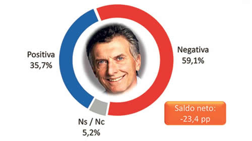

Real Chubut - Agencia de Noticias


La noche más oscura

El cambio se dio en los últimos treinta días y es abrupto. Lo que era desaprobación y crítica pasó a ser bronca y miedo. Hasta los votantes propios dicen que no votarían a Macri y que todo está peor.
La desaprobación y la crítica a la administración Macri se está convirtiendo en algo más negativo: bronca, incertidumbre, miedo. Nada menos que tres de cada cuatro argentinos sienten eso ahora, produciendo un cambio de máxima importancia en el cuadro de situación de la opinión pública. Las cosas ya venían mal para el gobierno, algo que se empezaba a notar en la cara, las respuestas y las internas de los funcionarios. Pero en los últimos treinta días hubo un salto. Todos los números exhiben la caída. Siete de cada diez dicen que la economía en su casa está mal y casi igual proporción piensa que dentro de un año estarán también mal. Tal vez lo peor es que ocho de cada diez personas confían poco o nada en el equipo económico, lo que deteriora muchísimos las expectativas. Hay que ver cómo se traduce este panorama en la cuestión electoral. Mucho dependerá de lo que haga la oposición y si se produce alguna recuperación económica en el primer semestre de 2019. Por ahora, son más los que dicen que votarían a un candidato opositor que al oficialismo.
Las conclusiones surgen de la encuesta mensual que realiza el Centro de Estudios de Opinión Pública (CEOP), que lidera el sociólogo Roberto Bacman. El trabajo es exclusivo para PáginaI12. En total se relevaron 1200 personas de todo el país respetando las proporciones por edad, sexo y nivel económico-social. La encuesta se terminó de procesar el viernes.
Sentimientos
El punto clave en el trabajo del CEOP es que percibe un cambio en el estado de ánimo. Bacman explica que “ya no sorprende a nadie que la gestión de Cambiemos esté pasando por su peor momento. Desde diciembre se encendieron las luces de alerta y mes tras mes la situación se fue agravando. Ocurre que de la preocupación se pasó sin anestesia ni estación intermedia a la bronca, la incertidumbre y el miedo. No queda duda: la situación es alarmante. Más de ocho de cada diez argentinos están preocupados por cuestiones puramente económicas, la inflación, la marcha de la economía en su conjunto y el costo de las tarifas y el combustible. Si le agregamos la preocupación por la desocupación, que creció este último mes, no hay argentino que no esté alarmado. Hace mucho tiempo que no se detectaba en nuestro país una situación de estas características”.
Perspectiva
Tal vez el dato más significativo de la realidad del último mes es que el Gobierno perdió el control de buena parte de lo que pasa en la economía y la vida cotidiana. Se disparó el dólar, la inflación, los alquileres, las tarifas, hay pérdida de puestos de trabajo, cierre de comercios. Y se percibió con muchísima claridad que la Casa Rosada no tuvo explicación e incluso las explicaciones fueron contradictorias entre unos y otros funcionarios. A eso se sumó la llegada al Fondo Monetario y una serie de ministros y hasta el presidente del Banco Central que tuvieron que dejar el cargo. Se ve que en la Casa Rosada también percibieron el cambio en la opinión pública porque se suspendieron los timbreos, el presidente se ausentó del acto del Día de la Bandera en Rosario y ahora se suspendió el desfile del 9 de julio.
“La confianza, el optimismo y la tranquilidad, tres sentimientos que acompañaron a la mayor parte de los argentinos que optó por Cambiemos en el ballotage de 2015, hoy redondean apenas menos del 25 por ciento. Por lo que puede verse, el componente contextual que acompañó a Cambiemos en los tiempos de campaña, se ha reducido a una mínima expresión”, señala Bacman. Debe tenerse en cuenta que en este último mes no sólo hubo una devaluación. También quedaron más expuestas algunas de las promesas de campaña que están lejísimo de cumplirse. Ni pobreza cero ni baja de la inflación ni capacidad para unir a los argentinos.
Elecciones
Bacman sostiene que la clave electoral está en los independientes, aunque el panorama es desfavorable para la Casa Rosada. “Si en nuestro país existiera un claro y definido bipartidismo –analiza Bacman– no cabría duda que el partido opositor, aquel que podría estructurarse si el peronismo logra construir la unidad, se impondría con facilidad. Lejos quedaron los tiempos cuando el oficialismo soñaba con un triunfo en primera vuelta. Sin embargo, sigue imaginando una oposición dividida y mantiene firme su esperanza de volver a antagonizar con el kirchnerismo, ya sea desde el punto de vista estrictamente político, o con CFK como figura simbólica y representativa de tal antagonismo”.
Pero en la encuesta de este mes hay, además, un dato novedoso. Bacman concluye que existe “un elemento que genera un nuevo desafío en el campamento oficialista. Nada más ni nada menos que cuatro de cada diez votantes que optaron por Macri en segunda vuelta, no lo volverían a votar. El valor es realmente duro para la actual estrategia electoral del oficialismo. La desesperanza es significativa y posee un anclaje cualitativo que descansa en cuatro factores. En estricto orden de importancia, lo primero es el incumplimiento de promesas. Segundo, que no logró diferenciarse y terminó siendo para la gente más de lo mismo. Tercero, que el cambio pregonado realmente no existió. Cuarto, que le han perdido la confianza”.
El Ejecutivo ya anunció que los tiempos serán difíciles de aquí a fin de año. El mismo pronóstico rige para lo que se vendrá en las encuestas.
Fuente: Pagina12